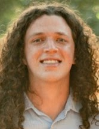

Jacob Guynee
Mathematics PhD Student
Georgia Institute of Technology

I am a fourth-year mathematics PhD student at Georgia Tech working with Dan Margalit. My research interests lie broadly in geometric group theory and low-dimensional topology. More specifically, I am interested in representations of braid groups and applications of braids and knots to the sciences.
Contact: jguynee@gatech.edu
CV:
Curriculum Vitae
Research
Mentoring / REU
CUBE REU at Vanderbilt
I was a mentor for a group studying virtual braid groups.
Project: Genus-0 Virtual Braids
Group: Jerry Gao, Alberto Magaña, Isaiah Williams
Poster: view poster
Teaching
Courses
I have been a teaching assistant for the following courses at Georgia Tech.
- Survey of Calculus Spring 2026
- Combinatorics Spring 2026
- Precalculus Fall 2025
- Combinatorics Summer 2025
- Precalculus Fall 2024
- Discrete Mathematics Spring 2024
- Differential Calculus Fall 2023
Outreach
In Spring 2024, I co-coreographed (with Aiya Kuchukova) an aerial silks act about braids and knots! Click here to watch!
The performance was part of the Science of the Circus event at the Atlanta Science Festival.